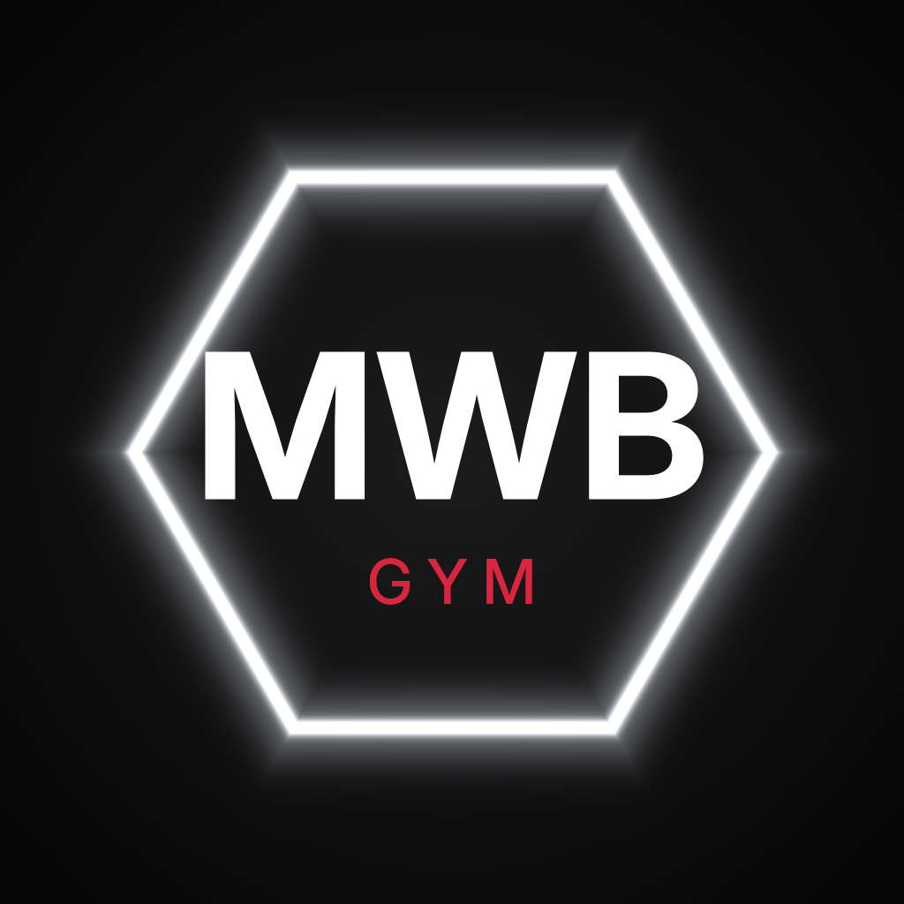

MarcelWB GymDatenschutzerklärung
Stand: 24. November 2026
1. Verantwortlicher
Betreiber dieser Website und von „MarcelWB Gym Studio“ ist der Inhaber des TikTok-Kontos @marcelwb_gym. Kontakt: per Direktnachricht über TikTok.
2. Welche Daten verarbeitet werden
Nach ausdrücklicher Zustimmung über den offiziellen TikTok-Login werden über die TikTok Display API ausschließlich folgende Daten des eigenen Kontos gelesen: Basis-Profildaten (Anzeigename, Profilbild, Benutzername), Profilstatistiken (Follower, Gefolgte, Likes, Videoanzahl) sowie die öffentlichen Videos mit Titel, Beschreibung, Länge, Veröffentlichungszeit, Aufrufen, Likes, Kommentaren und Shares.
3. Zweck
Die Daten dienen ausschließlich der Auswertung der eigenen Kanalentwicklung und der Planung eigener Inhalte. Es findet keine Weitergabe an Dritte, kein Verkauf und keine Werbung statt.
4. Speicherung und Sicherheit
Statistiken werden in einem privaten, zugriffsgeschützten Speicher abgelegt. Zugangstoken werden verschlüsselt gespeichert. Ein Passwort wird nie erhoben.
5. Widerruf und Löschung
Die Zustimmung kann jederzeit in der TikTok-App unter Einstellungen → Sicherheit → Apps und Dienste widerrufen werden. Auf Anfrage werden gespeicherte Daten gelöscht.
6. Diese Website
Die Website wird über GitHub Pages (GitHub Inc.) bereitgestellt; dabei können technisch notwendige Server-Logdaten (z. B. IP-Adresse) verarbeitet werden. Es werden keine Cookies und kein Tracking eingesetzt.
Privacy Policy (English summary)
With explicit consent via TikTok Login Kit, this app reads only the owner's own basic profile, profile statistics and public video list with metrics (Display API, read-only) to analyse channel performance. Data is never sold or shared, tokens are stored encrypted, and consent can be revoked at any time in the TikTok app.